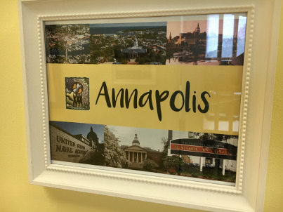

Make the most of your time in the United States. We encourage all of our students to travel during their time in the U.S. We notice that our students thrive through use of their English as they explore the U.S. We hope you can visit many of these destinations during your time here!
Some of our favorite places to visit in the Mid-Atlantic region are listed below. Our team voted and selected these as our favorite destinations to recommend to students in the Mid-Atlantic. We even named our classrooms after these cities, states, and natural areas! The photos you see below were taken outside of our classrooms. We invite you to visit our school to see our wonderful learning environment!
We have prepared information for students about the following destinations. Click on the links below or come and visit us to learn more!
Annapolis is a beautiful city located on the Chesapeake Bay. It is Maryland’s capital and is also known by many as the sailing capital of the world. Annapolis is home to some of the best museums, historic sites, and restaurants in Maryland. It also has many lovely parks, gardens, and mansions. If you like watersports, it’s a great place to visit during the summer. More about Annapolis
The Chesapeake Bay is 200 miles long and is bordered by both Maryland and Virginia. The bay has enormous ecological, economic, historic, and cultural significance for the United States. If you enjoy fishing, boating, hiking, water sports, picnicking, bird-watching, or relaxation, the Chesapeake Bay is a great place to visit. You will also find hundreds of historic sites, museums, and parks to visit along the bay. There are many worthwhile Chesapeake Bay locations that are an easy drive from the Washington, D.C. area. Many of the following destinations are even accessible for a well-planned day trip away. More about the Chesapeake Bay
New York City is America's largest city and one of the world's most vibrant megacities. With a metropolitan area population of approximately 20 million, New York is a city of extremes of wealth and poverty. Most Americans would say that New York is also a city of intense images, smells, sounds, ideas, feelings, and emotions. You really should experience it during your time in the United States! More about NYC
Pennsylvania is not far from Maryland and offers many destinations that are rich in history and culture. Much of the state is an easy drive from the Washington, D.C. area. Many of the following destinations are even accessible for a well-planned day trip away. More about Pennsylvania
The Shenandoah region of Virginia is a beautiful area with great nature, scenic views, and some of the best hiking/walking trails on the East Coast. Located only about 90 minutes from Bethesda, Shenahdoah is the closest of America’s national parks to Washington, D.C. It is a “must see” for international residents of the area. We encourage you to explore Shenandoah and experience its natural beauty and outdoor activities! More about Shenandoah
Baltimore is the largest city in Maryland. It is known as “a city of neighborhoods” because there are hundreds of identified districts to explore. Many of these, such as Fell’s Point, Federal Hill, and Mount Vernon Place, are famous historic districts. Baltimore is also the city with the most public monuments in the entire country. More about Baltimore
Information about more destinations is forthcoming. We know that many students like to visit cities such as Boston, California, Chicago, and Florida! Please let us know if you have any questions about other places to visit while you are in the U.S.!